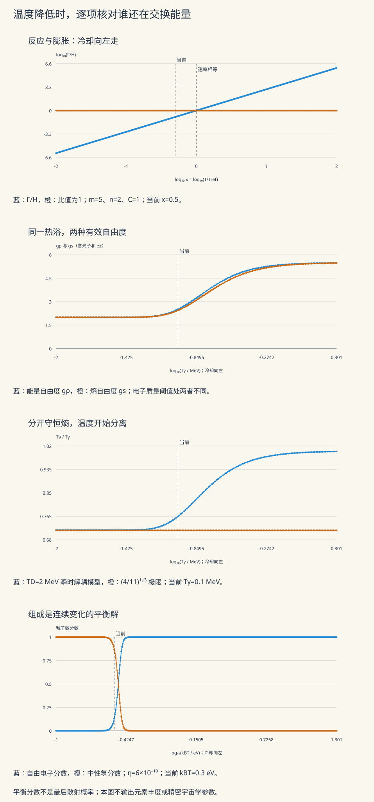

本页目录
宇宙学 II · 热历史与 CMB
对标：Ryden §8–11 ｜ 前置：cosmo-01、sm-03（Planck 谱/统计）、atom-01（核） 早期宇宙 = 一锅按 \(T \propto a^{-1}\) 降温的热汤——统计物理 + 粒子物理在膨胀背景上的应用题。本页沿温度轴走三站：原初核合成（前三分钟的元素工厂）、复合与 CMB（宇宙的婴儿照）、以及 CMB 声学峰如何变成精密宇宙学的标尺。暴胀作为开篇问题的答案一瞥收尾。

1. 热历史的通用法则
降温律：辐射主导时 \(T \propto a^{-1}\)（sm-03 光子气 + \(a^{-4}\) 稀释——热汤按膨胀冷却）。冻结（freeze-out）法则：反应维持平衡的条件是反应率 > 膨胀率 \(\Gamma \gtrsim H\)——降温使 \(\Gamma\) 骤降、某刻反应"来不及" ⇒ 丰度冻结：宇宙学的核心机制（下面每一站都是它的实例；"非平衡遗迹 = 今日可观测物"——宇宙是台天然的非平衡实验装置）。
2. 原初核合成（BBN，\(t \sim\) 3 分钟）
剧本【机理链】：\(T \gtrsim 1\) MeV：中子质子经弱作用互变平衡，\(\frac{n}{p} = e^{-\Delta mc^2/k_BT}\)（Boltzmann 因子——sm-02 的日常汇率）；弱作用冻结（\(T \approx 0.8\) MeV）时 \(\frac np \approx \frac16\)，再经中子衰变到 \(\approx\frac17\)；\(T \approx 0.07\) MeV 时氘瓶颈打开、几乎全部中子被焊进 \(^4\)He：
【推导一行 + 意义】 质量占比 25% 的氦——与观测吻合的无参数预言（大爆炸理论的第一根支柱）；痕量氘/锂的丰度对重子密度极敏感——"宇宙第一杆重子秤"（与 CMB 独立测量交叉验证 \(\Omega_b \approx 0.05\) ✓——普通物质只有 5% 的两条独立证据链）。
3. 复合与 CMB（\(t \approx 38\) 万年）
复合：\(T \sim 0.3\) eV 时电子被质子俘获成中性氢（滞后于 13.6 eV 一大截——光子数超重子 \(10^9\) 倍，高能尾巴持续电离：Saha 方程的账【引用】）；光子失去散射对象（Thomson 截面的电子没了——ced-02 例 2 退场）——宇宙变透明，末次散射面的光自由飞行至今：
CMB = 红移 1100 倍的那一刻：\(T = 2.725\) K 的史上最完美黑体谱（FIRAS 数据点误差小于线宽——sm-03 Planck 公式的巅峰实测）；各向同性到 \(10^{-5}\)——那 \(10^{-5}\) 的涨落是全部结构（星系、你）的种子。
声学峰（婴儿照的指纹）【机理级】：复合前光子-重子流体在暗物质引力井中振荡（压强 vs 引力——弹簧；mech-04 的振动在宇宙尺度返场）；复合瞬间"快门按下"，不同波长的模式冻结在不同相位——功率谱（球谐分解 \(C_\ell\)——mp-01 球谐的宇宙级岗位）出现峰列。读数规则：第一峰角位置 = 声学视界的角尺寸 ⇒ 量空间几何（平坦 ✓，\(\Omega_k \approx 0\) 的出处）；峰高比 ⇒ 重子/暗物质配比；整套谱一次锁定 ΛCDM 六参数（cosmo-01 账本的测量车间）。
4. 暴胀一瞥（开篇问题的答案候选）
三大疑难：视界问题（天各一方的 CMB 为何同温——从未有过因果接触）、平坦问题（\(\Omega_k \approx 0\) 需要初值精调）、遗迹问题。暴胀方案：极早期 \(\sim e^{60}\) 倍的指数膨胀（de Sitter 相，cosmo-01 例 2 的机制放在开头）——小因果区被吹成整个可观测宇宙（同温解释 ✓）、曲率被拉平 ✓；红利：量子涨落被拉出视界冻结成经典密度涨落——结构的种子是量子涨落（qm 线与宇宙学的惊人接线），预言近标度不变谱（\(n_s \approx 0.96\)——已测 ✓【引用 Planck】）。诚实标注：暴胀是"标准候选"而非定论（具体模型未锁定、原初引力波 B 模尚未探得——第三档了望塔边界）。
5. 练习与要点
例 1（冻结判据练手） 弱作用 \(\Gamma \propto T^5\)、辐射期 \(H \propto T^2\)：\(\Gamma = H\) 给 \(T_f \sim 1\) MeV——量纲估算摸到 BBN 的门口（系数详算【引用】）；同法用于暗物质"WIMP 奇迹"的丰度估算【引用】——冻结法则的第三次上岗。
例 2（CMB 光子今何在） 数密度 \(\sim 411/\mathrm{cm}^3\)（sm-03 Planck 谱积分）：你每秒被 \(\sim10^{15}\) 个大爆炸光子穿过；老电视雪花点的 ~1% 是 CMB——"宇宙背景"字面意义的日常版。
例 3（声学标尺算术） 声学视界 \(\sim 150\) Mpc（共动）、末次散射面距离 \(\sim 14\) Gpc：角尺度 \(\theta \sim 0.6° \Rightarrow \ell_1 \approx \frac{\pi}{\theta} \approx 220\)——第一峰位置的量级推算（实测 \(\ell_1 = 220\) ✓）：一道除法题量出宇宙的形状。\(\blacksquare\)
下一页：研究生板块收官——计算物理：蒙特卡洛与分子动力学，把统计物理放进你的显卡。